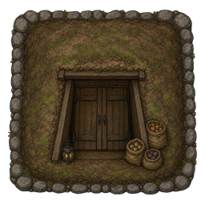

Preserve without a freezer
Dry, salt, and smoke from day one of a tribal start. The drying rack needs no research; curing and smoking unlock with Primitive homestead.

Racks, smoke, and trail food
Turn surplus into stores that survive the caravan and the cold snap.
- Drying rack — jerky, fruit leather, dried produce, pemmican
- Curing rack — rock salt and salted meat
- Smokehouse — smoked meat (and smoked fish with Odyssey)
- Hayloft and ingredient barrel for bulk farm storage
A kitchen that earns its keep
Mill grain, churn butter, press cheese, brew cider, and plate pantry meals at the homestead hearth.
Dairy, jam, and hearth meals
Recipes lean on what you grew — cream, sugar, fruit, and smoked leftovers — not a chemfuel factory.
- Grain mill, butter churn, cheese press, pickling crock
- Jam cauldron and brewing bench
- Toast and jam, ploughman’s lunch, honey porridge, pie
- Favorite foods — pawns remember what they love


Water that feeds the fields
Former Wellspring content ships inside Homesteader. Draw, catch, store, and trench water into irrigated soil. With Dubs Bad Hygiene, tanks join the plumbing net.

Wells, barrels, and irrigation
- Hand-dug and deep wells, rain barrels, cisterns, solar stills
- Water towers for elevated reserve
- Irrigated soil and planters for richer crops
- Boiled water, mud bricks, and clean bandages
Cool storage, comforts, and power
Root cellars keep the pantry cold. Quilted beds and maypoles make the yard feel like home. Batteries and a wood generator keep the lights on without a reactor.
From cellar to generator
- Root cellar, icehouse, and springhouse passive cooling
- Quilted beds, rocking chairs, harvest maypole, 27 statues
- Compact through ultratech batteries
- Wood-burning and portable generators

Homestead research tree
Neolithic to industrial — drying racks and basic crates stay available with no research.
→ Food preservation → jam cauldron
→ Farmstead crafting → mill, dairy, hearth → Brewing
→ Storage → root cellar & preserves shelf
→ Comforts → furniture, maypole, 27 monuments
→ Advanced homestead → wood-burning generator
→ Wellcraft / Irrigation / Waterworks → wells and irrigated land
Homesteaders scenario
Three settlers, livestock, and hand tools — far from the glitterworld supply chain. A homestead supplier caravan visits with preserves, seeds, and the occasional Diggo plushie.
Get it running
- Download the zip (or clone the repository).
- Copy the
Homesteaderfolder into your RimWorldModsdirectory. - Enable Homesteader and Harmony in the mod list, then restart.